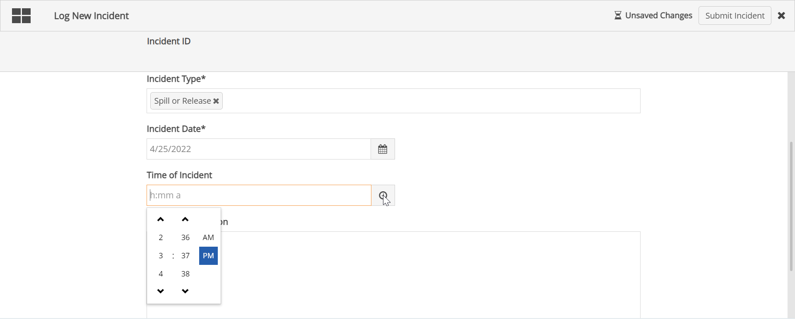

Click the New Item button.
Complete the fields to create a new record. Standard fields that may be available (depending on the configuration) include:
Workflow Name: If this field is editable and you do not enter a name, a name will be generated for you.
Object selector: If App items are to be associated with a system model object (i.e., a facility), you can click in the box and start typing to select from matches. To see a list of all system objects to select from, type %%%.
Complete other form fields, as applicable.

Click Submit.
The buttons available to users and their labels are configurable and will be specific to the App.
Users may be required to assign the process to a user or group before proceeding. In the Assign dialog select an assignee.
Click in the box to see available assignees or search for a user or group.

The app may be configured to skip this step and automatically assign the next step. If it is automatically assigned to you, you will see the form for providing further details.